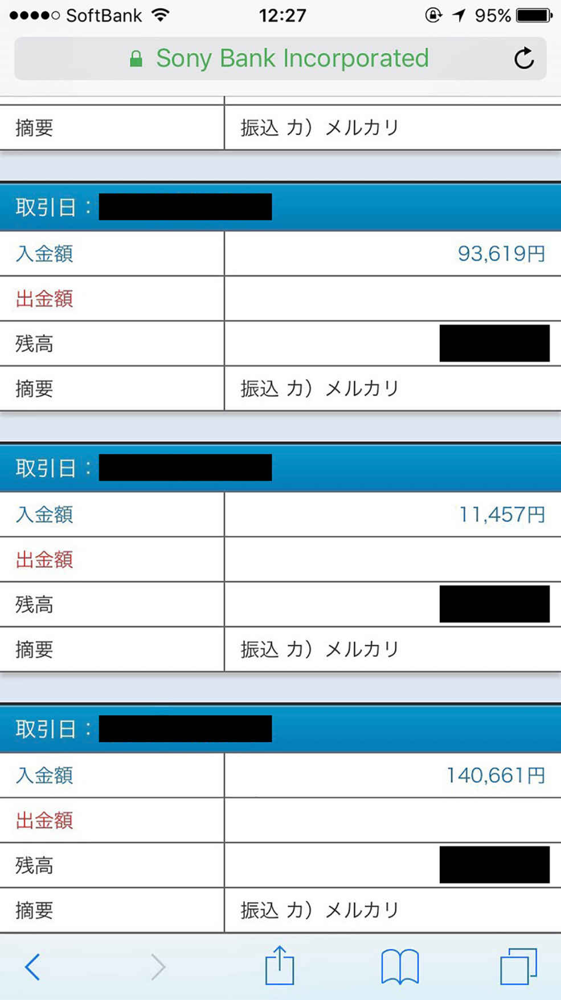

| 寝ながら稼ぐ禁断の技術 〜PC１台で３ヶ月で不労所得を得る極意〜 | |
| 小西大輝 | |
| Hitotsuku Publication (2018) | |
寝ながら稼ぐ禁断の技術 〜PC１台で３ヶ月で不労所得を得る極意〜
小西大輝
はじめに
はじめまして。小西大輝です。
この度は、本書を手に取っていただき、誠にありがとうございます。
いきなりですがあなたは、この本のタイトルを見たとき、どんなことを思いましたか？
「寝ながら稼ぐ？ 何を言ってるんだ？？」「そんなの不可能でしょ」「何か悪いことでもやってるんじゃないの？」などなど、様々な印象を持たれたのではないかと思います。
その気持ちは、すごくよく分かります。私も「寝ながら稼ぐ」と初めて聞いたときは、正直「怪しい」気持ちしかありませんでしたので（笑）。
でも、ご安心ください！ この「寝ながら稼ぐ」は、やり方さえ分かれば、誰でも叶えることができます。しかもその方法は、決して悪いことや怪しいことではありません。ちゃんとした、まっとうなビジネスをして実現することができるのです。
この方法を知り、正しく実践をしていけば、あなたの人生を大きく変えることができる、私はそう断言できます！ なぜなら私自身、「寝ながら稼ぐ」生活をして、自分の人生を変えた人間の１人だからです。
私は１年前まで、「お金と時間の不自由さ」に縛られたフリーター生活をしていました。借金もあったので、朝から晩まで働くことが当たり前、お金のために生きることが当たり前、そんな生活を送っていました。
しかし、ビジネスの世界に飛び込んで、お金を稼ぐことを知って、今では月収１００万円以上を、稼ぐことができています。私のようなビジネス未経験、知識ゼロの人間でも、たった１年でそんな生活に変われたのです！ これってすごいことだと思いませんか？
今、私たちが生きている世界では、一口に「お金を稼ぐ」と言っても、様々な手段があります。毎日会社に通勤して働くのも、自営業で働くのも、アルバイトやパートで働くのも、自分でも取り組めるビジネスを何か始めてみるのも、どれも立派なお金の稼ぎ方です。
生きていくためには、お金は必要ですし、仕事をしなければお金を得ることはできません。生きるために誰もが汗水垂らして、一生懸命働いて、お金を稼いでいる、それが当たり前かもしれません。
しかしあなたは、自分の人生にどれだけ幸せを感じていますか？ 今のあなたは、本当にあなた自身がなりたかった姿で生活をできていますか？
人間は誰だって、自分自身や周りの大切な人の幸せを願って生きています。もちろん幸せの形は人それぞれですが、お金と時間が不自由な生活で、あなたが望む幸せを手に入れることは、果たしてできるでしょうか？ いや、正直厳しいでしょう......。
本書では、何のスキルもなかった私が、どうしてビジネスを始め、どんなことを考えてビジネスに取り組み、何をして実績を積み上げて、「寝ながら稼ぐ」を実現できたのか、包み隠さずお伝えしていきます。最後まで読めば、「寝ながら稼ぐ」秘密を理解でき、あなたに、「自分でもできる！」と思っていただけると、そう私は信じています！
本書を通して、「寝ながら稼ぐ」方法を知っていただき、生活を変えるきっかけを生むことできましたら何より幸いです。
第１章 一歩を踏み出したそのときから、あなたの人生は劇的に変えられる！
・中卒、月収10 万円、借金まみれのどん底からがスタート地点
ビジネスの話をする前に、私のことを、「この人、どんな人なんだ？」と思われている方がたくさんいることでしょう。ですので、まずは私のことをあなたに知っていただこうと思います。
私、小西大輝は、群馬県出身の26
歳で、現在は物販ビジネスコミュニティで、ビジネス講師をしています。２０１６年12
月からビジネスを始めて、多くの方のビジネスをサポートさせていただいています。
今は会社員のお給料以上のお金を稼げるようになっている私ですが、はじめにも少しお話ししたように、以前は毎日アルバイトばかりのフリーター生活を送っていました。
私は、高校を中退したため、最終学歴は中卒になります。そしてそのままアルバイトを始めたので、職歴や資格も一切ない、今の学歴社会ではかなり厳しい肩書きの人間でした。そのため月収も、良いときでやっと10
万円を超えるくらいで、その上借金も抱えていたというどん底の生活を送っていたのです......。
仕事を選ぶ自由も、当時の私には無く、「テレアポ」という電話でお客さんに商品を売りこむ仕事をしていました。しかし、この仕事が私には本当に辛くて、仕方がありませんでした。
まず職場が、当時私が住んでいたところから片道１時間半かかる場所にありました。そのため、通勤に往復３時間、しかもギュウギュウの満員電車に揺られながら通わなければなりませんでした。
また、多くの方にも共感していただけることだと思いますが、電話で商品を売るのは、非常に難しいことです。電話をかけたお客さんにきついことを言われる、ノルマを達成できないと上司に怒鳴られる、それがもう日常茶飯事だったのです。でも、商品を売らないとお給料はもらえないので、自分が売りたくないものも売らなければなりません。私にはそれができず、当たり前のようにサービス残業をしていました。
こんな生活だったので当時は、飲み会があれば愚痴大会、休日も仕事に備えて体力を使ない１日で、自分は何のために生きているか分かりませんでした。お金もない、時間もない、仕事のことを考えるとストレスしかない、そんな世界で自分の存在する意味を考えても、不自由なゾッとする将来しか思い浮かばなかったのが私の人生でした。
だから私は、「こんな自分の人生を変えたい！」と強く感じ、必死にその方法を模索し続けました。そうして出会ったのが、今もやっているネット物販ビジネスだったのです。
・あなたは繰り返していませんか？ 夢も希望もない毎日を
さて、ここであなた自身も、今の自分の生活を少し見つめ直してみてください。
寝ていたい身体を起こして、仕事の準備をして、通勤ラッシュの中会社へ向かい、やりたくない業務に取り組み、流れ作業のように食事を済ませ、上司の顔色を伺いながら報告をして、疲れた体で帰宅して、そのまま明日に備えて眠りにつく......。こんな繰り返しの毎日を送っていませんか？
休日の過ごし方や、家事に追われる日々でも同じです。生活の中で、お金と時間に縛られた不自由な生活を繰り返していないでしょうか？
正直、「私の人生は、お金も時間も自由で、夢や希望に満ち溢れた毎日を過ごせています！」と、胸を張って言える人は、ほとんどいないでしょう......。
もちろん、家族と過ごす時間や友人たちと遊ぶ時間、自分の好きなことができる時間といった心安らぐ瞬間は、普段の生活の中にも少なからずあるとは思います。私も、楽しい！ 面白い！ と感じられる癒しの時間は、フリーター生活の中で、わずかですがありました。
でも悲しい話、そういった幸せな時間は、辛い時間と隣り合わせにあるものなのです。その時間は満足でも、「この楽しい時間が終われば、また辛い仕事の日々が待ってるんだ......」と憂鬱になる人って、現実のところたくさんいますよね。つまり、時間だけを部分的に見れば幸せでも、その時間がずっと続いていかなければ、それは本当の幸せではないのです。
では、幸せな時間が続いて、辛い時間が無くなる、そんな人生を手に入れるにはどうすればいいのでしょう？
そんな生活をあなたにもたらしてくれるのが、これからご紹介するネットビジネスなのです！
・「時間とお金が自由な世界」をもたらしてくれるネットビジネス
あなたは、「ネットビジネス」という言葉を聞いて、どんなイメージを抱きますか？
「最近よく耳にするけど、いまいちよく分からない」「なんか難しそう」「そもそも怪しいビジネスなんじゃないの？」など、いろいろ思い浮かぶものでしょう。
ネットビジネスは、その文字通り、ネットを使ってお金を稼ぐビジネスのことです。ネットビジネスと一口に言っても、ネット物販、アフィリエイト、ＦＸ、仮想通貨など、様々なビジネスがあります。詳しいことに関しては、またのちほど解説していきますが、ここでは、ネットビジネスは「時間とお金が自由な世界」をもたらしてくれるものなんだ、と私はあなたに伝えたいです。
まずネットビジネスは、ネット環境とパソコンさえあれば、どこででもやることができます。例えば、今日は天気が良いから出かけようと思ったら、その出かけた先で仕事ができるのです。それは公園でも、カフェでも、海辺でも、ファミレスでも、どこでだって構いません。場所に縛られず、自分の好きな場所で作業ができるのです。
またネットビジネスには、時間の拘束もありません。会社のように何時に出勤して、何時にこの作業をして、何時に書類を上司に提出して、という時間の縛りがないのです。だから、朝ゆっくり起きて昼間に仕事をすることも、家事のすき間時間で作業をすることも、時間があるときにまとめてやっておくことも可能になります。
さらにネットビジネスでは、しっかり取り組めば、短期間で大きな結果を出すこともできます。実際ネットビジネスで、サラリーマンのお給料以上のお金を常に稼ぎ出している人はたくさんいますし、私自身も最初は、会社の仕事の傍らでビジネスを始めて、短期間で会社のお給料を超える結果を出すことができました。だから、お金の面でも、自由を手に入れることができるのです。
いかがでしょう？ ネットビジネスってすごいんだなと感じませんか？
私は、ネットビジネスのおかげで、会社を辞めることもでき、今では好きな人と好きな時間を過ごすことができています。付き合う人も、自由に選ぶことができ、本当にストレスのない幸せな生活を手に入れることができたのです。
そんな「時間とお金が自由な世界」をあなたも手に入れたくありませんか？
・どんな立場や経歴も関係ない！ 誰もが始められるネット物販ビジネス
ネットビジネスの魅力が分かっても、「小西さんだからできたことで、自分にはできるか分からない」「ネットスキルもない人間が、ネットビジネスなんかやっちゃいけないんじゃないか」と、思われるかもしれません。
もちろん人には、それぞれに違った境遇があり、全ての人に当てはまるものは、世の中には存在しません。実際私も、初めてネットビジネスを知ったときは、「自分みたいな学歴も能力もないフリーターにできるのかな......」とものすごく不安でした。むしろ、最初から「自分でもできる！」と思える方が、難しいかもしれません。だからその気持ちは、私自身すごくよく分かります。
でもネットビジネス、特にネット物販ビジネスは、どんな立場や経歴も関係なくできる、そんなビジネスなのです。
そもそも世の中にある仕事には、「人を選ぶビジネス」と「人を選ばないビジネス」があります。
例えば、ホリエモンがセミナーやメルマガ配信をやっていたからと、いちサラリーマンが真似して、全く同じ内容のセミナーを開いたり、メルマガ配信をしたりしても、まず誰も集まりませんよね？
当然と言えば当然ですが、セミナーやメルマガは「人を選ぶビジネス」なので、いちサラリーマンが、ホリエモンと同じことをしてもうまくいかないのです。ホリエモンの言葉だから、みんなお金を払って聞きたいわけで、名も知らない一般人の言葉なんて聞きたい人はいません。つまりは、ビジネスに「再現性がない」ということです。
一方、「人を選ばないビジネス」としてあるのが、私もやっている「ネット物販ビジネス」です。
例えば、いろはすの飲料水が欲しくて、ネットショップで買おうと思ったとき、出品者がホリエモンであろうと、いちサラリーマンであろうと、いろはすが買えればどうでもいいですよね？ 誰が出品者であろうと、欲しい商品が売られていれば、買う人は人を選ぶことなく買うのです。つまり誰がやっても同じような結果が得られる「再現性がある」ビジネス、それが「人を選ばないネット物販ビジネス」なのです。
だからネット物販ビジネスは、サラリーマンでも、主婦の方でも、ビジネス未経験の若者でも、立場や経歴は一切関係無くやることができます。この人でなければできない、こんな経歴だと無理、ということは決してないのです。
私は今まで、たくさんの方の境遇を聞いて、ネット物販のコンサルをしてきましたが、「こんな人だからビジネスは無理です」となることは、一切ありませんでした。ですので、あなたも安心してビジネスに取り組んでいただきたいです。
以上が第１章になります。ネットビジネスで、大きく人生を変えられること、ネット物販ビジネスは誰でもできることを、お分かりいただけたことでしょう。
第２章では、ネット物販ビジネスはいったいどんなことをするのかをお伝えしていきます。
・私がネット物販で稼いだ実績を大公開します！
さてここで、ネット物販ビジネスはちゃんと稼げるんだよという証拠をお見せするために、私がネット物販ビジネスで稼いだ実績を大公開します。これらの実績は売上金のごく一部です。


第２章 ビジネス未経験でもしっかり稼げるネット物販の魅力とは？
・最初に「ビジネス初心者」はどういった選択をするべきなのか
ここからは、ネット物販とは何をするビジネスなのか、具体的にお伝えしていきます。
第１章では、ネットビジネスはお金と時間の自由を手に入れることができ、誰でも始められるとお話ししてきました。ですが、たくさんのお金の稼ぎ方がある中、どうしてネット物販ビジネスをまず初めに選ぶ方がいいのか？ 他のビジネスでは何がいけないのか？ そんな疑問があなたの中にあるのではないかと思います。
そもそも大きく分ければビジネスにも、リアルビジネスとネットビジネスがあります。ネットビジネスは、第１章のところでもありました、アフィリエイト、ＦＸ、仮想通貨などのネットでできるビジネスで、リアルビジネスは、お店を構えて、直接お客さんにサービスを提供するビジネスのことです。例えば、スーパーやコンビニ、飲食店はリアルビジネスになります。
何かビジネスを始めようと思ったとき、それがリアルビジネスなら、お店を開くための膨大な初期費用、お客さんに売る自分の商品作り、市場の調査、集客、営業のためのコミュニケーション......など、準備しなければならないことがたくさんあります。そのため、すぐにビジネスを始められませんし、始められてもビジネス未経験の人では、結果を出すまでに、ものすごく高いハードルを越えていかなければなりません。
しかしネットビジネスなら、ネット上でビジネスが完結するので、パソコンとネット環境さえ整っていれば、膨大な初期費用をかけることなく始めることができます。
ただ、ネットビジネスの中でも、何を選択するのかは重要になってきます。アフィリエイトは集客スキルやライティングスキルがないと、稼げるようにはなりませんし、ＦＸや仮想通貨も専門的な投資の知識がないと、損をするだけで稼げるようにはなりません。だからこれらのネットビジネスは、初めの選択として、適切とは言い難いのです。
このように、０からビジネスを始めるときには、たくさんの要素を考えなければなりません。そのため、お金や情報、スキルがないビジネス初心者には、できることがものすごく限られてきます。だから、お金がかからず、スキルもいらず、自分の商品が無くても始められる、そんなビジネスを最初は選ばなければいけないのです。そしてそれら全てを満たしているのが、ネット物販ビジネスになると、私は考えています。
ネット物販ビジネスでは、あなたが準備すべきことは本当に少なくて済みます。
まず商品を売る場所は、ヤフオクやアマゾンといった誰もが知っているショップサイトを使うので、初期費用も利用登録料くらいしかかかりませんし、すでに多くの人が利用しているので、集客もしなくて大丈夫になります。また、すでに売れている商品を販売していくので、商品作りをする必要もありません。さらに売れている商品の説明をコピーして使えば、自分が出品した商品も同じように売れるので、営業もしなくていいのです。
ゆえに、ネット物販ビジネスは、ビジネス初心者が最初に選ぶのに最適なビジネスモデルになるのです。最初の選択を間違えると、その後の結果にも大きく影響するので、あなた自身が納得できる選択をしていってくださいね。
・物を売るのに在庫がない？ リスクが少ない〝在庫を持たない転売〟
そんなビジネス初心者が始めやすいネット物販なのですが、特におすすめなのが〝在庫を持たない転売〟と呼ばれるネット物販のやり方です。
「在庫を持たない転売？ 何それ？」と、あなたに思われるかもしれませんが、ご安心ください（笑）。あまり聞き慣れない言葉なので、そう思うのも決して悪いことではありませんので。
この在庫を持たない転売とは、文字通り、在庫無しで商品を転売する手法になります。
普通、何か物を売るときは、売りたい物を製造元から仕入れて、自分の手元に在庫を抱え、その商品をお客さんに販売するのが一般的です。実際、スーパーやコンビニでも、野菜やお菓子を製造業者から仕入れて、店頭に並べて売っていますよね。
でも、仕入れた商品が全て売れる保証は、どこにもありません。だから、仕入れた物が売れなければ、それは不良在庫になってしまい、赤字になります。そのため、物販をするときは、仕入れの費用、不良在庫、商品管理のリスクを考えなければなりません。
でも在庫を持たない転売では、それらのリスクを考えることなく商品を販売することができます。
一連の流れを解説しますと在庫を持たない転売は、まず自分が売りたい商品の画像と商品説明文を用意し、利益が出せる価格を設定して、ネットショップで出品します。その商品が売れたら次は、仕入れ先で商品を注文して、そのまま購入したお客さんの元に商品を発送します。そうして商品がお客さんに届き、売上金を受け取れば、取引が完了するという流れになります。言うならば、商品カタログを先にお客さんに見てもらい、購入が確定したら、その商品を仕入れて、お客さんに渡すイメージです。
この在庫を持たない転売では、商品が売れたことが確定してから商品を仕入れるので、仕入れ費用、不良在庫、商品管理のリスクを考える必要がありません。また専門的な難しい操作も無く、ネット上で全て完結するので、パソコンが苦手な人でもできて、疲れる力仕事も一切せずに取り組むことができます。そのため、数あるネット物販の手法の中でも、ビジネス初心者が始めるにはうってつけのビジネスモデルになるのです。
・結果を出すために守るべきたったひとつのお約束
さて、そんなメリットの多い在庫を持たない転売なのですが、何も考えずに取り組んでいても、結果を出すことはできません。結果を出すためには、ひとつ守らなければならないことがあります。それは「結果を出すためのルールを守る」ということです。
ネット物販ビジネスに限らず、何にでも言えるのですが、物事には、うまくいくやり方とうまくいかないやり方があります。
例えば料理でも、美味しい料理を作るためのレシピがありますし、サッカーでもプレーが上達するための練習メニューやフォームトレーニングがあります。だからどんなことにも、ちゃんとした結果を出すためのルールがあるのです。
在庫を持たない転売でも、結果を出すためのルールがあります。正しい商品のリサーチ、正しい出品のやり方、正しい取引のやり方という、うまくいくための〝型〟があるのです。だから、実際にビジネスに取り組むに当たって、自分はルールを守れてやれているかを、しっかり確認しながら進めていくことが、非常に大切になります。
これまで私も、ビジネスを始めた方をたくさん見てきましたが、結果を出せる人と出せない人の決定的な違いとして、「この人は、ルールを守って取り組んでいないな」と感じるケースが多くありました。
ルールを守れていない原因はシンプルで、「やっていない」か「やり方が間違っている」かの２つしかないのです。ちなみに、この「やっていない」という原因の中には、本来必要な行動レベルまで達せていない状態も含まれます。
どんなビジネスも、やらなければ当然結果は出ませんし、間違ったやり方で進み続けても、本来の型から外れていますから、結果は出せません。つまり、型通りに取り組んで、結果を出せるレベルまで辞めずに継続する、これがネット物販ビジネスで結果を出すために守るべきルールになるのです！
・ビジネス界での大原則「自己流は事故る」
ただ、ビジネスで結果を出すためのルールを守って取り組めている人は、かなり少ないのが現実です......。なぜなら人は、実践していると自分のやりやすい形にやり方を変化させる「自己流」を、知らず知らずのうちに、ビジネスに取り込んでしまうからです。
日本の芸術や文化の教えで有名なのですが、「守破離」という言葉があります。これは、物事を教わるときには、この順番にやりなさいという考え方を表しています。「守破離」には、まずは型を〝守る〟ことから始めて、型ができたら自分にあった型を作るために、既存の型を〝破り〟、最後はその型から〝離れて〟自由自在になれる、そういった意味があるのです。
つまり、何も分かっていない状態から自己流を取り入れることは、絶対にいけないのです。
例えば料理でも、パスタを知らない人間がいきなり、「カルボナーラを作ってください」と言われて、自己流でカルボナーラを作ったら、全く訳の分からない料理ができあがりますよね？ カルボナーラのレシピという型があるのに、それを守らずに料理をしても、求める物を作ることはできないのです。
だから自己流ができるのは、型を守ってレシピ通りに作れるようになり、型を破れるようになってからになります。そして、その型から離れられるようになったら、トマトソースも、ペペロンチーノも、ミートソースも、別のパスタを自由に、自己流で作れるようになるのです。
ネット物販もこれと同じで、稼ぎ方を分かっていない状態で、自己流でいろいろと取り組むのは非常に危険です。ルールがあるのに自己流で商品をリサーチしたり、販売したりすると、結果が出せない上に、既存の型を見失ってどんどんドツボにはまってしまいます。まさに「自己流は事故る」、そんな結果になってしまうのです......。
だからビジネスに取り組むに当たっては、自分のちっぽけなプライド、自己流を捨てることが重要になります。その自己流が、のちのち自分自身の首を絞めてしまわないためにも、です！
以上が第２章になります。ネット物販ビジネスは、どんなことをやって、何を考えて取り組めば良いのか、知っていただけたことでしょう。
第３章では、具体的にどのように在庫を持たない転売を実践していけば良いかをお伝えしていきます。
第３章 在庫を持たない転売で日給１万円を実現する方法をとことん解説！
・在庫を持たない転売をやるなら「ヤフオク！」でやろう
ここからは、在庫を持たない転売を実際には、どこの販路でどのようにやるのか、具体的な実践方法についてお伝えしていきます。
第２章でありましたように在庫を持たない転売は、ネット上のショップサイトを活用して、在庫を持たないで物販をしていく方法です。しかし今のネット上には、たくさんのショップサイトが存在しています。そのため、どの販路で自分は在庫を持たない転売を行えばいいのか？ そんな疑問がまずは生まれてしまうものでしょう。
そんな数あるショップサイトの中でも、これからあなたが在庫を持たない転売を始めるに当たり、活用していくべきおすすめの販路は、ずばり「ヤフオク」になります。
なぜヤフオクが良いのかと言いますと、第一にショップの市場規模が他のサイトよりも大きいからです。ヤフオクは、１９９９年に誕生し、現在までに多くのユーザーが取引をしてきた、日本では大変ポピュラーなショップサイトになります。国民の95
％
が知っているサイトとも言われており、それゆえに市場規模は大きく、ユーザーがたくさんいる販路になるのです。
当然ですが、人がいないと商品は売れませんし、人が多ければ多いほど売れるチャンスも大きくなりますよね。だから、ユーザーが多いヤフオクは、在庫を持たない転売をやっていくには最適なショップサイトなのです。
またヤフオクでは、多くの商品を出品することができます。ネットショップによっては、出品できる商品のジャンルや出品できる商品数、複数アカウントの禁止の規制があります。そのため、物販をやっていくうえで、縛られた環境でやらなければいけないことが、正直多くあるのです。
しかしヤフオクは、自分たちの生活で使う、非常に多くのジャンルの商品を出品することができます。また出品数も、３０００出品までできるようになっています。加えて、複数アカウントの利用もできるので、１度にたくさんの商品を売ることが可能になるのです。
在庫を持たない転売では、在庫がないからこそ、たくさん商品を出品して、たくさん売ることがしっかり稼いでいくための基本になります。だから長い目で見ても、ヤフオクで始めていくのがベストなのです！
・在庫を持たない転売でもネット上で商品が売れるワケ
在庫を持たない転売を、ヤフオクで始めていけば良いのかと分かっても、なぜ在庫を持たないで物販ができるのかが分からなければ、なかなか実行には移しにくいものです。ですので、実際にヤフオクの在庫を持たない転売では、どのように取引が進められていくのか、ここでは解説していきます。
ヤフオクの在庫を持たない転売では、ヤフオクのアカウント、アマゾンのアカウント、クレジットカードが必要になるので、まずは準備をしておきます。
それらの準備ができたら次は、自分のショップで売る商品を決めていきます。最初に売る商品は、アマゾンのランキングで売れている物を、そのまま在庫を持たないで売る商品として選んでいけば良いので、簡単に決めることができます。例えば、アマゾンランキングでヘッドホンが上位にランクインしていたら、それをヤフオクでも出品するのです。
商品が決まったら、商品画像と商品説明文を用意して、利益の出る価格でヤフオクに出品をします。そして出品した商品が購入されたら、今度はアマゾンのヘッドホンの販売ページから商品の注文をして、購入されたお客さんの元へ、アマゾンから直接発送をします。その後、商品がお客さんに届き、代金を受け取れば取引は完了です。
このような流れで、自分、お客さん、ヤフオク、アマゾンの間で、取引が進んでいきます。お客さんの立場から見ると、ヤフオクで自分が欲しかった商品を買えたという結果だけが残り、在庫を持たないで売っていた物かどうかを認識することもありません。だからあなたは在庫を持たないで出品をしても、取引を成立させることができるのです。
この作業は、どの商品でも同じで、全てネット上で完結します。作業を繰り返して、慣れれば慣れるほど、スムーズに取引も進めていけるので、継続すれば効率良く稼げるようになっていけるので、ぜひ続けていってください。
・まずは日給５０００円を目指す４つのステップ
ヤフオクで、どのように在庫を持たない転売が成立しているかが分かれば、あとは作業に集中していけば、利益を出していくことができます。ですが、ビジネスに限らず何をするにも、到達目標を立てながら前進していくことが大事になります。
もちろん最初から大きな目標を掲げて、取り組むのも良いのですが、それだとモチベーションを維持し続けることがなかなかできません。ですので、自分はいくら稼ぎたいのかを、始めに意識しておくようにしましょう。
ヤフオクの在庫を持たない転売において私は、まずは日給５０００円を目指して取り組んでいくことをおすすめします。そしてそれを達成するための４つのステップをここでは解説していきます。
まず１つ目は、自分のアカウントの評価集めをしっかりすることです。
ヤフオクでは、売り買いのどちらの取引でも、取引が終わると、相手を評価する仕組みになっています。例えば、あなたが出品したヘッドホンが落札されて、その後スムーズに取引が終われば、落札したお客さんから良い出品者かどうかの評価をもらえるのです。逆に自分が購入者側でも、その評価は同じです。そしてその評価が、自分の取引実績となって、自分のアカウントに残り続けます。
もしあなたが購入者の立場だったとき、同じ商品、同じ価格の物でも、悪い評価ばかりの出品者と、良い評価がたくさんある出品者がいたら、どちらから商品を買いたいと思いますか？ もちろん後者ですよね（笑）。
だから、取引を繰り返して、良い評価をたくさん集めることが、その後の売り上げに大きく影響してくるのです。
評価集めは、安い商品を何か購入したり、手ごろな不用品を買われやすいように安く出品したりしていけば、どんどん溜められるので、積極的にアカウントを動かすようにしていってください。
２つ目は、出品する商品をしっかり選択することです。
これまでの話の中でも、自分が売る商品選択の話は出てきていましたが、この選択を間違えると、正直自分の商品は全然売れません。だからと言って、商品を片っ端から何でもかんでも出品すれば良いというわけでもありません。
出品する商品は、アマゾンでもヤフオクでもすごく売れていて、ちゃんと利益がとれるもの、これを選ぶようにしていきます。商品さえ決まれば、次に解説する商品リストも作りやすくなるので、この商品選択は怠らずに行うようにしてください。
３つ目は商品リストの作成をすることです。
出品する商品が決まっても、それをひとつひとつ手出品をしていては、時間も労力もものすごく増えてしまいます。それでは、労働でお金を稼いでいることと同じです。
だから出品する商品をまとめたリストを作成し、それを出品ツールで一気に出品できるようにする必要があるのです。商品リストは、アマゾンランキングからデータを抽出し、ヤフオク形式の商品リストに変えるだけなので、この作業だけで大量に商品を出品することができます。ちなみにこの商品リストの作成の実践方法は、独自のノウハウがあるので、詳細を知りたい方は、私のＬＩＮＥ＠
に登録して、特典申請のご連絡をいただければと思います。
４つ目は、商品の発送はまとめて行うことです。
商品が売れ出していくと、当然ですが、発送作業も多くなります。発送のときには、商品の注文、お客さんの住所の入力、発送連絡をしなければならないのですが、数が多くなると、それらはかなりの手間になります。そのため、その都度発送の作業をしていると、時間にも縛られますし、他の作業にも大きな影響を与えてしまうのです。
だから商品を発送するときは、その日や一定の期間に売れた分をまとめて、徹底的にやるようにします。そうすることで、作業にメリハリがつきますし、効率良く在庫を持たない転売を進めることができるのです。
以上の４つのステップで、無駄を省きながら作業を進めていき、まずは日給５０００円を目指してみてください。それが達成できれば、また次へ次へとステップアップすることもできますからね。
・仕組みが分かればあとは行動するだけ！
ここまでお話ししたことが、ヤフオクの在庫を持たない転売で利益を出していく作業の流れになります。どのような仕組みで、ビジネスができているのかが分かれば、もうそのあとは前へ前へと進んでいくだけです！ ただ、前進し続けるために、気を付けておくべきこともあります。
このヤフオクの在庫を持たない転売で、利益を大きくしていくためには、多くの商品の出品を考えておかなければなりません。だから、いくつもの商品リストを回していかなければならなくなります。
またそのためには、複数のアカウントを作って、商品をどんどん出品していく必要も出てきます。１つのアカウントでしていたことを、２つ、３つ、４つと増やしてやっていくことができれば、その分利益も大きくなりますよね。
ただ、複数アカウントを運用するならば、アカウントの数だけまた評価溜めをして、アカウントを強くしていかなければなりません。それにヤフオクでは、複数アカウントは認められているのですが、在庫を持たない転売をしていると、アカウント停止になるリスクがどうしても高くなってしまいます。だから、より一層アカウントの管理には注意をしながら、物販をやっていかなければならなくなるのです。
このような作業量が増える、アカウント停止のリスクがある、といった状況に直面しても、辞めずに前進し続けること、これが利益を大きくするためには大事になります。つまり、苦難なときに備えた、心構えをしておくことが必要不可欠になるのです。
まず、商品リストの作成作業は、当然ですが出品する量が増えると共に、作業量も増えていきます。そのため、何も考えずに取り組んでいると、それは苦しい作業にもなってしまいます。
でも、一度作った商品リストは自分の資産となって、繰り返し使うことができるのが、ヤフオクの在庫を持たない転売の強みでもあります。だからこのときに、「自分は商品リストを作って、資産を増やしているんだ」と、プラスに見方に変えられる心構えができれば、商品リストの作成作業も、決して苦しい作業にはなりません。つまり、プラスに考えられることで、めげずに作業を進めることができるのです。
またアカウントが使えなくなっても、事前にサブアカウントを作っておき、育てておけば、問題無く作業を続行することができます。停止になってもその準備していたアカウントをメインにして使えば良いだけなので、そうすればリスクを気にせず物販を続けることができるのです。
これらのことから要は、稼げるようになるには、それに見合うだけのマインドを、自分自身も身につけなければならない、と私は言いたいのです。ネット物販だけに限らず、どんなビジネスでも、大きな利益を出そうと行動したら、それに伴ってリスクも増えていきます。だから、ビジネスの成長と共に、自分も成長しなければならないのです。
それがしっかりできれば、日給１万円以上もより色濃く意識ができますし、第４章でお伝えしていく「寝ながら稼ぐ」も自分のものにできるようになります。だからあなたも、ちゃんとした心構えをしておき、辞めずに行動し続けることを、絶対に忘れないでくださいね。
以上が第３章になります。在庫を持たない転売をどのように実践していけば良いのかをお分かりいただけたことでしょう。
第４章では、この在庫を持たない転売で「寝ながら稼ぐ」自分になるためにやるべきことについて、お伝えしていきます。
第４章 不労所得で月収30 万円！「寝ながら稼ぐ」秘密を大公開！
・ネット物販ビジネスを忙しくさせている３つの要因
さあ、ここからは本書の肝でもある「寝ながら稼ぐ」の秘密を紐解いていきます。
まず話に入る前に、第３章の内容を振り返ってみてください。
ネット物販では、利益を大きくなればなるほど、それに伴って自分がするべき作業量も多くなることがお分かりいただけたかと思います。そしてその作業の中で、特に手を煩わせる作業がありました。
細かく言えばいろいろと出てきますが、ここではその作業を、大きく３つにまとめて挙げさせていただきます。その３つとは、
・商品のリサーチ
・ショップへの出品
・購入者への発送
です。
世の中にある多くの商品の中から、出品する商品を選ばないといけないうえに、その数も増やすとなると、当然リサーチ作業も増えます。しかもそれを出品しないといけないので、出品作業も増えますね。商品が売れたら、ひとつひとつをそれぞれのお客さんへ発送しなければならないので、こちらも作業が多くなります。想像しただけで、どの作業も大変だとイメージができるでしょう。
この３つは、やることが分かっているのに、作業量が多いために、時間を費やしてしまう、そんな作業になるのです。でもこの作業は実は、自分でなければできない仕事ではありません。だから、「自分以外の誰かがやっても、利益に変わりはない」とも言えるのです。
そんな仕事を、いつまでも自分でやるのは、効率が非常に悪く、その状態をずっと続けていては、あなたはいつまで経っても「お金と時間と自由」を手に入れることはできません。なぜならば、ビジネスの効率を良くすることが、ずばり「寝ながら稼ぐ」を実現するためのキーポイントになるからです！
・自分じゃなくてもできる仕事は人に任せよう
ビジネスのことが分かって、安定してお金を稼げるようになったら、時間と労力を有意義に使うために、仕事を人に任せることを意識していかなければなりません。仕事を人に任せること、要するに「仕事を外注して自動化」していくことで、それは将来のビジネスの発展に大きく寄与していくからです。このビジネスの発展とはつまり、「寝ながら稼ぐ」ことです。
例えば、あなたが飲食店のオーナーだと考えてみてください。お客さんが増えて、自分ひとりではお店が回せなくなったら、アルバイトを雇って、仕事をやってもらうようにしますよね。それでもし、従業員が増えて、あなたがいなくてもお店が回るようになれば、あなたは何もしなくてもお金を稼ぐことができるようになります。これはまさに「寝ながら稼ぐ」の状態です。
物販ビジネスでもこれは同じで、仕事が増えたら、人に報酬を出して仕事を外注していくことで、作業を自動化して進めることができるようになります。自分が何もしなくても、ネット物販ビジネスが動いている、この状態を作ることが、まさにあなたが実現すべき姿なのです。
そもそも、生活の自由を得るためには、「お金の自由度」×「時間の自由度」が大きくなければなりません。商品をたくさん売って、利益が大きくなれば、お金の自由度は大きくなるでしょうが、自分ひとりでやっていては時間の自由度は小さくなります。もしそのまま、作業に縛られて過ごしていたら、時間の自由度はいつか０になってしまいます......。
お金の自由度と時間の自由度のどちらかが０では、生活の自由を手に入れることはできません。もちろん自己責任で仕事を抱えてやることも、大切なことではあります。ですが、自分ひとりでできることには限界がどうしてもあるのです。だから、自分しかできない仕事、他の人でもできる仕事を、ちゃんと仕分けて、ビジネスを整理していくことが「寝ながら稼ぐ」を叶えるうえでは欠かせなくなるのです。
実際私も、身内や知人に利益を折半する形で、仕事を外注しています。折半だと、外注の人数が増えると共に、自分の収入も増えていくので、合理的にビジネスを行うことができるのです。
ただ、仕事を依頼するときには、自分自身がちゃんと信頼を置ける人に依頼をするようにしてください。お金のやり取りが生じるビジネスにおいては、人と人との信頼関係がないと、大きなトラブルを引き起こすケースが多くなりますので。信頼できる人をどれだけ増やせるかは、またのちほどお伝えしていきます。
・外注をする前に知っておくべき仕事の仕組み
作業を整理して、仕事を外注していこうと考えたとしても、自分自身が外注の仕組みを知らなければ、人に依頼することはできません。つまり、「どの仕事をどのように人に依頼したら良いのか？」を、ちゃんと知っておかなければならないのです。
外注の依頼は、家族や友人で自分が信頼できる人がいたら、その人に依頼をするのが一番無理のない方法になります。ですが、人脈が広くない方や、外注が多くなったときに人手不足になる方もおられることでしょう。
そのため、外注の人を募集するときは、アウトソーシングサイトを活用していきます。代表的なアウトソーシングサイトとしましては、クラウドワークス、ランサーズ、シュフティ、ジモティがあります。
在宅ワークで月に５万円でも稼ぎたい人は、世の中にはたくさんいますし、ネット作業の仕事内容を求めている人も、現在はかなり多くいます。だから、サイトから外注の人を募集することで、比較的容易に人員を確保することができるのです。
また募集する仕事の内容としては、作業を細分化し、それぞれの作業を依頼するか、自分の作業を全て依頼するかの、２つのやり方があります。
作業の細分化して依頼するとは、先ほどありました、商品のリサーチ、ショップへの出品、購入者への発送のそれぞれの作業を、それだけやってもらうように依頼することです。具体的に言いますと、リサーチの仕事だけ、出品だけ、発送だけをしてもらう作業部隊をそれぞれ作り、外注の人に手分けしてもらって作業だけをやってもらうようにしていくのです。
自分の作業を全て依頼するとは、ネット物販でどのようにすれば稼げるかのノウハウを、全て人に教えて、全部の作業を人に任せることです。例えるなら、自分の分身を作っていくようなイメージで、自分と同じくらい稼げる人を増やしていくことになります。
この２つのやり方には、それぞれにメリット、デメリットがあります。
作業の細分化では、作業で分けられているのでシステムは作りやすいですが、どこか１つが欠けると、全体の仕事が回らなくなります。ですので、しっかりとした作業部隊の構築が必要になってきます。
自分の仕事を全て依頼すると、自分と同じくらい稼げる人が増えるので、報酬を支払っても自分の収入がしっかり確保できるようになれます。しかし、稼げるようになるまでしっかり教えていかなければならないので、人としての信頼関係がすごく大事になってきます。
どのように外注するにしても、自分のやりやすいやり方でやっていくのがベストです。ですから、仕事の仕組みをちゃんと自分自身が理解してから、外注は行うようにしましょう。
・あなたはプレイヤーじゃない、失敗しないために持つべき「オーナー思考」
仕事を外注していくための仕組みも分かり、実際に外注をしても、失敗をしてしまう人は、実はかなり多くいます......。それは、ビジネスでせっかく稼げるようになったのに、非常にもったいないことです。
ですが、私から言わせてもらえば、その原因は、実はすごく明白です。それは、人を教育し管理する思考、つまりは「オーナー思考」が、その人に身についていないことが大きいのです。
どんな仕事でも、従事する人が多くなると、人を管理する人が必要になります。会社で言えば、人事が社員を管理していますし、部長や課長が自分の身近な仕事の管理をしていますよね。
個人のビジネスでも、これは同じです。仕事を外注して、自分が不労でお金を稼げるようになるには、「人を教育する」ことを、しっかりとできるようにならなければなりません。厳しいことを言えば、それができないなら、あなたは一生ひとりで働き続けるビジネスプレイヤーでいるしかありません。そんなことは、絶対に嫌ですよね？
「人に教育する」ことは、ちゃんと相手の立場になって物事を考えられるか、でもあります。人は感情で行動をする生き物です。だから自分自身が、どれだけ相手にしっかり行動を起こさせる感情を植え付けていけるかを、意識した人間関係を築かなければならないのです。
例えば、モチベーションやマインドが落ちること、作業をきちんとしてくれないときは、外注をしているとどうしても起きてしまいます。そんなときは、直接コミュニケーションをとってフォローすること、親身にヒアリングをして、悩みを解決できるようにすることを、最低限やるようにしましょう。
また、「あなたが一生懸命やってくれたら、やった分だけ報酬を出していきます」「あなたがお金を稼いだ先にはこんな生活が待っていますよ」と、将来の展望も伝えていくことで、外注を依頼した人も、より真面目に仕事と向き合ってもらえます。
つまり外注する人と人との関係は、お金のつながりだけではない、ということです。どんな仕事も人が動くことでできており、その土台には、「あなただから」という信頼関係が存在しているのです。
私の経験から感じることですが、この「人に教育する」意識が身についている人は、そんなに多くいません。実際、あなたの上司にも、「何でこんな言い方しかできないんだ......」と思ってしまうような人はいませんか？ だから、裏を返せばそれだけ身につけることが難しいマインドでもあるのです。
プレイヤーを一刻も早く卒業して、「寝ながら稼ぐ」を実現するためにあなたも、「人に教育する」こと、「オーナー思考」に気を付けておくようにしてください。
・「アウトプット」を前提とした「インプット」を今からしていこう！
人を教育し、管理していく「オーナー思考」が、「寝ながら稼ぐ」を叶えるためには身につけなければならないことが、お分かりいただけたかと思います。では、そんな思考を自分のものにしていくためには、どうすればいいでしょうか？
これには、「アウトプット」を前提とした「インプット」を今からやっていくことが、何より大切になります。私自身も常に意識をしているのですが、学んだことを自分の力にしていくためにはこの、「アウトプット」を前提とした「インプット」が欠かせないのです。
一般的に、自分が知識を蓄えて学ぶことを「インプット」、その知識を使って実際に行動することを「アウトプット」と言われています。多くの人が「インプット」と「アウトプット」を分けて、考えているのです。
しかし私は、「アウトプットこそが最強のインプットである！」と考えています。「アウトプット」を前提とした「インプット」を、学ぶ段階から意識することが、「オーナー思考」を身につけるための根幹になるのです。
例えば何かセミナーを聴いてきて、終わったあとに突然、「このセミナーで、あなたは何を学びましたか？」と聞かれて、「このセミナーからは、こんなことを学ぶことができて......」と、ちゃんと言葉にして答えられる人ってあまりいませんよね？ でもあらかじめ、「このセミナーで学んだことを聞くからね」と言っておけば、説明することを前提にしてセミナーを聴くことになるでしょう。
そしてアウトプットがしっかりできることで、初めてそれは自分のものにすることができます。実際セミナーでも、聴いている人よりしゃべっている人の方が学んでいる、とよく言われます。だからアウトプットまでが、自分自身のスキルにするためのインプットになるのです。
ビジネスも同じで、自分で取り組んでいるときに、「物販ビジネスを他の人に説明するには、どういう気持ちで今、自分は実践するのが良いのか？」と考えながら、インプットすることが大切です。そしてインプットしたことを、誰でも構いませんのでアウトプットする訓練をすることで、ビジネスがより自分自身の力になるのです。
だから今からあなたも、「アウトプット」をするための「インプット」をぜひ考えるようにしてください。そうすることであなたには、「寝ながら稼ぐ」を叶えた未来を手に入れられるのですから。
おわりに
本書を最後まで読んでいただき、誠にありがとうございました。
「寝ながら稼ぐ」とはどういうことなのか、最後まで読んでいただいたあなたには、ご理解いただけたことでしょう。
私は今、人生をすごく楽しいと感じています。正直少し前までは、時間とお金に縛られて、辛い仕事をして、毎日死んだ魚のような目をしていた自分がいました。そんな世界が当たり前だと感じていたのです。
しかし今、生活の中でそんなことを微塵も感じません。仕事が好きで、仕事をすることが生きがいになって、昨日よりも今日、今日よりも明日が楽しく感じられているのです。好きなことをいつもできているので、仮に今死んでも、後悔をすることが何もないくらいです（笑）。
でもこのような生活は、誰だって手に入れることができます！ それはもう、勇気を出して行動する、うまくいっている人の真似をする、これだけなのです。そこに周りの目や自分の今の環境は、一切関係ありません。自分の気持ちに正直になることが、何より人生を変える第一歩になります。
「寝ながら稼ぐ」という理想の生活を手に入れた今、私はあなたも理想の生活を送っていただきたい、そう強く感じています！ 私は、あなたの勇気ある第一歩を、全力でサポートさせていただきます。「現状を何とか変えたい！」「寝ながら稼ぐ生活を手に入れたい！」、そんな気持ちが少しでも心に芽生えましたら、ぜひご連絡ください！
最後になりますが、家族、友人をはじめ、私の生活を支えていただいている全てのみなさまに、心から御礼申し上げます。
ありがとうございます。
小西大輝
著者プロフィール
小西 大輝『こにし だいき』
１９９１年生まれ / 群馬県出身 /
起業コンサルタント / ビジネス、投資アドバイザー
ビジネス、投資のコミュニティの代表と講師を務めながら多数の実績者を輩出。
自由が大好きで、縛られたり、やらされるのが大嫌い。
学生時代からサラリーマンにはなりたくないという想いがあり、『高校⇨大学⇨就職』という敷かれたレールの上を走ることに違和感を覚える。
中学時代の必死の勉強の末、念願だった偏差値70
の県内トップ高校に合格するも、この生き方では理想の人生は送れないことを察し、高校を即辞める。
その後自分のやりたいことで生きていきたいと思うようになり、音楽の華やかな世界で生きていくことを夢見る。
しかし高校中退から約10
年間、音楽に没頭するも、借金を背負った上に、食べていけるまでには至らず、音楽業界の厳しさを思い知る。
自分の全てをかけていたバンドも解散し、学歴中卒、職歴なし、資格なし、借金も背負い、夢も自信も失って、毎日借金返済のために働く日々。
自分は何のために生きてるのか？
生きがいも、生きる目的もなく、自殺まで考えるが、なんとか返り咲きたいという強い想いからインターネットビジネスでの起業を決意。
初月から16
万円、２ヶ月目に22
万円の利益を出し、起業１年目で月収１００万円を達成し続けて、どん底からの人生を激変させる。
その後は物販事業、教育事業、代理店事業などを持ち、コンサルティングや講師育成も行う。
また、多数のビジネスと投資のコミュニティを運営。
YouTube 番組
https://www.youtube.com/channel/UCAcd3KRVThmhTLzq9xqoV4g
タイトル 寝ながら稼ぐ禁断の技術 〜ＰＣ１台で３ヶ月で不労所得を得る極意〜
発行日 ２０１８年６月１日
著 者 小西大輝
本書の全部あるいは一部をコピー、スキャン、デジタル化する無断複製は、著作権法上での例外である私的利用を除き禁じられています。本書を代行業者等の第三者に依頼してコピー、スキャンやデジタル化することは、たとえ個人や家庭内での利用であっても一切認められていません。
©２０１８ Daiki Konishi